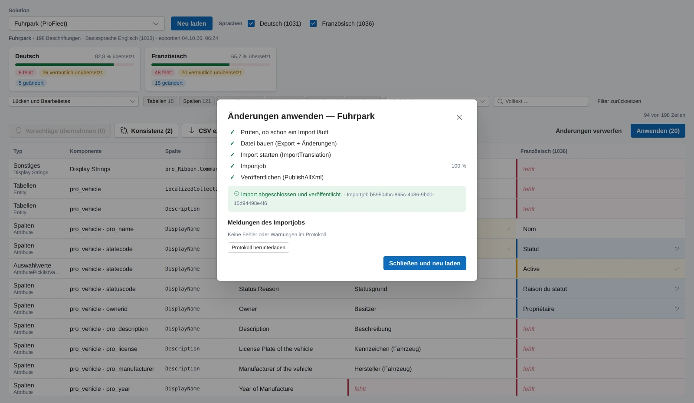

Eine Power Apps Code App für Dataverse-Umgebungen mit mehr als einer Sprache. Sie zeigt je Solution und Sprache, welche Beschriftungen fehlen oder vermutlich nie übersetzt wurden, lässt die Lücken direkt in einer Matrix oder per CSV durch die Fachabteilung füllen und spielt das Ergebnis über den Standard-Import von Dataverse zurück, mit Fortschritt, Protokoll und Veröffentlichung.
Typ
Power Apps Code App, läuft im Tenant des Kunden
Technik
React, TypeScript, Vite, Fluent UI v9
Daten
Übersetzungs-Export und -Import von Dataverse, nur Metadaten
Dataverse pflegt jede Beschriftung je installierter Sprache: den Anzeigenamen einer Tabelle, jede Spalte, jeden Auswahlwert, jeden Formular- und Ansichtsnamen. Fehlt eine Übersetzung, sehen französische Anwender englische Feldnamen. Der Standardweg, das zu beheben, ist seit Jahren derselbe: Übersetzungen exportieren, eine Zip-Datei mit einer Excel-2003-XML-Datei von tausenden Zeilen bekommen, darin ohne Filter nach dem suchen, was fehlt, importieren, veröffentlichen.
In der Praxis heißt das: Niemand sieht, was fehlt, und niemand pflegt es laufend. Mit jedem Release kommen neue Spalten dazu, die Lücke wächst. Das Translation Studio dreht den Weg um. Es liest denselben Export, zeigt nur die Lücken, lässt sie an Ort und Stelle füllen und schreibt dieselbe Datei mit den Änderungen zurück. An diesem Weg vorbei ändert es nichts an den Metadaten.
Im Spiel sind ausschließlich Metadaten, keine Geschäftsdaten. Die Abbildungen auf dieser Seite zeigen die App mit den eingebauten Beispieldaten, einem fiktiven Fuhrpark-Szenario in Englisch, Deutsch und Französisch, nicht mit Kundendaten.
Die App ist fertig gebaut und läuft vollständig mit Beispieldaten, einschließlich eines simulierten Imports. Der erste Einsatz in einer Kundenumgebung mit drei Sprachen steht an.
Studio
Der Arbeitsbereich: Solution laden, Lücken sehen, füllen, zurückspielen.
Solution und Sprachen
Den Umfang bestimmt eine Solution aus der Umgebung. Unmanaged Solutions lassen sich bearbeiten, managed nur ansehen. Die Default-Solution steht ebenfalls zur Wahl, mit dem Hinweis, dass ihr Export sehr groß wird. Weil der Export immer die ganze Solution enthält, wirken die Komponententypen als Filter und nicht als Teil des Umfangs. Zielsprachen lassen sich an- und abwählen, die Basissprache ist immer dabei und nie editierbar.
Managed nur lesen
Default mit Größenwarnung
Hinweis statt leerer Matrix bei nur einer Sprache
Filter und Kennzahlen
Gefiltert wird nach Zustand, Typ, Tabelle und Volltext. Der Standard ist Lücken und Bearbeitetes, damit eine gerade gefüllte Zeile sichtbar bleibt, statt aus der Liste zu verschwinden. Die Typ-Knöpfe tragen ihre Zähler, die Tabellenliste kommt aus den Metadaten der Umgebung, der Volltext sucht in allen Texten, Schlüsseln und Komponentennamen. Eine Leiste je Sprache zeigt die Abdeckung in Prozent sowie die Zahl der fehlenden, vermutlich unübersetzten und geänderten Zellen. Ein Klick auf eine Zahl setzt den Filter.
CSV-Export und Bulk-Aktionen wirken auf die gefilterten Zeilen
Lückenmatrix
Jede Zeile ist eine Beschriftung: Typ, Komponente mit Tabelle und Name, soweit aus den Metadaten auflösbar, die betroffene Spalte wie Anzeigename, Beschreibung oder Mehrzahl, der Text der Basissprache nur lesend und je Zielsprache eine editierbare Zelle. Vier Zustände je Zelle: fehlt, wenn die Zielsprache leer ist. Vermutlich unübersetzt, wenn der Text mit der Basissprache identisch ist. Das ist eine Vermutung, „Status“ ist auch Deutsch, deshalb lässt sich die Zelle als korrekt markieren, und die Markierung bleibt je Solution erhalten. Geändert, solange eine Bearbeitung noch nicht importiert ist, mit Rücknahme. Und ok.
Die Matrix rendert nur die sichtbaren Zeilen und kommt so auch mit zehntausenden Beschriftungen zurecht. Enter übernimmt, Esc verwirft. Texte über 500 Zeichen lehnt sie ab, weil der Import daran scheitern würde, und eine vorhandene Übersetzung lässt sich nicht leeren, weil nicht dokumentiert ist, ob eine leere Zelle beim Import „löschen“ oder „unverändert“ bedeutet.
Vier Zustände mit Farbe
Korrekt-so-Markierung je Solution
Eigene Fensterung ohne Grid-Bibliothek
Die Matrix einer Solution mit zwei Zielsprachen: Kennzahlen je Sprache, Filterleiste und je Zelle Zustand und Glossar-Vorschlag.
Glossar und Konsistenz
Ist derselbe Basistext an anderer Stelle schon übersetzt, zeigt die Zelle einen Vorschlag. Ein Klick übernimmt ihn, ein zweiter Knopf übernimmt ihn für alle Lücken mit demselben Basistext in dieser Sprache, und Vorschläge übernehmen in der Werkzeugleiste tut das für alle gefilterten Zeilen auf einmal. Gibt es mehrere Übersetzungen, gewinnt die häufigste. Der Konsistenz-Report listet Basistexte, die in einer Sprache verschieden übersetzt sind, etwa „Notes“ als „Notizen“ und „Anmerkungen“, und vereinheitlicht sie auf Wunsch.
Vorschläge schreiben nie selbst
Übernommenes bleibt als Änderung sichtbar
CSV-Roundtrip mit der Fachabteilung
Die gefilterten Zeilen gehen als CSV hinaus, mit Semikolon und UTF-8, sodass Excel sie direkt öffnet. Jede Zeile trägt einen stabilen Schlüssel, Texte, die wie Formeln aussehen, sind geschützt. Wer keine Dataverse-Rechte hat, füllt die Sprachspalten aus und schickt die Datei zurück. Das Einlesen zeigt vorab, was sich ändert und was nicht übernommen wird: unbekannte Schlüssel, die Basissprache, Texte über 500 Zeichen. Leere Zellen bedeuten unverändert.
Nur die Lücken, nicht die ganze Datei
Diff-Vorschau vor der Übernahme
Anwenden: Import, Fortschritt, Veröffentlichen
Die Vorschau zeigt ausschließlich die geänderten Zellen, gezählt je Sprache, mit vorher und nachher. Der Import läuft dann in fünf Schritten: prüfen, ob in der Umgebung schon ein Import läuft. Die Datei bauen, und zwar den Export plus die Änderungen, ohne eine Zeile zu entfernen oder umzusortieren. Den Import starten. Den Importjob alle zwei Sekunden lesen, pausiert, sobald der Browser-Tab im Hintergrund ist, und solange gesperrt für weitere Bearbeitung. Zuletzt veröffentlichen, standardmäßig eingeschaltet, abschaltbar und nachholbar.
Das Ergebnis nennt die Meldungen des Importjobs, Fehler und Warnungen je Zeile, und bietet das Protokoll zum Herunterladen an. Schließen und neu laden exportiert danach neu, die Matrix zeigt dann den Stand aus Dataverse und nicht den lokalen.
Ein Import zur Zeit
Fortschritt aus dem Importjob
Protokoll zum Herunterladen
Die Vorschau vor dem Import: nur die geänderten Zellen, je Zeile Komponente, Spalte, Sprache, vorher und nachher.

Nach dem Import: fünf abgehakte Schritte, der Importjob mit seiner Kennung und das Protokoll zum Herunterladen.
Weitere Bereiche
Was neben dem Studio noch da ist.
Verlauf
Jeder Import landet mit Zeitpunkt, Solution, Änderungen je Sprache, Ergebnis, Importjob-Kennung und dem Vermerk, ob veröffentlicht wurde, im Verlauf. In der ersten Fassung liegt er lokal im Browser, die letzten 25 Läufe. Eine eigene Tabelle in Dataverse, damit auch andere ihn sehen, steht auf der Roadmap und braucht ein Schema in der Kundenumgebung.
Lokal, ohne Schema im Kundentenant
Einrichtung
Die erste Anlaufstelle nach dem Deployment in eine neue Umgebung. Geprüft werden die Adresse der Umgebung, der Dataverse-Konnektor, die nativen Aktionen für Export, Import und Veröffentlichen, die Lesbarkeit der Solutions, die Basissprache und die Importjobs. Export testen exportiert eine kleine Solution und zeigt, über welchen Weg das lief, wie groß die Datei ist, welche Sprachen installiert sind und wie viele Beschriftungen sie enthält.
Sagt, wenn nur eine Sprache installiert ist
Hilfe
Ein Seitenpanel mit Suche und elf Abschnitten, vom Überblick bis zu den häufigen Fragen. Es öffnet sich aus dem jeweiligen Bereich heraus an der passenden Stelle. Der Inhalt lebt als Daten neben dem Code und wird mit jeder sichtbaren Änderung nachgezogen, damit die Anleitung nicht hinter der App zurückbleibt.
Durchsuchbar
Kontextbezogen
Quer durch die App
Was überall gilt, unabhängig vom Bereich.
Leitplanken
Die Basissprache wird nie geschrieben, eine unveränderte Datei nie importiert. Die Datei, die zurückgeht, ist der Export plus die geänderten Zellen: keine Zeile entfernt, nichts umsortiert, Formatierung und unbekannte Spalten bleiben erhalten, XML korrekt maskiert. Ohne Änderungen ist die Serialisierung byte-identisch mit dem Export, und ein Test stellt das sicher.
Eine vorhandene Übersetzung wird nie geleert, Texte über 500 Zeichen werden abgelehnt, es läuft nur ein Import zur Zeit, managed Solutions sind nur lesbar. Heuristik und Glossar schreiben nie selbst, sie markieren und schlagen vor. Alles davon ist im Code durchgesetzt, nicht nur in der Anleitung.
Rechte und Grenzen
Alles läuft mit dem Konto des angemeldeten Benutzers, nicht mit einem Dienstkonto. Export und Import brauchen das Recht, Anpassungen zu exportieren und zu importieren, in der Regel die Rolle System Customizer. Fehlt das Importrecht, bleibt die App im Lesemodus und sagt das im Klartext; die Lücken lassen sich dann als CSV an jemanden mit Rechten weitergeben.
Bewusst nicht enthalten: maschinelle Übersetzung, weil sie eine Datenschutzentscheidung des Kunden braucht, das Bearbeiten der Basissprache sowie Texte in Canvas Apps, Flows und Sitemap, die der Export von Dataverse nicht abdeckt.
Datenweg
Der Dataverse-Konnektor einer Code App kann Tabellen lesen und Aktionen aufrufen, aber keine Metadaten schreiben. Deshalb geht alles über den nativen Übersetzungs-Export und -Import, eine Aktion je Richtung, plus Veröffentlichen. Der Fortschritt kommt aus der Importjob-Tabelle. Für jede Aktion kennt die App mehrere Wege und merkt sich den ersten, der funktioniert.
Bei Import und Veröffentlichen probiert sie einen zweiten Weg nur, wenn der erste nachweislich nicht existiert, und nie nach einem Timeout, bei dem der Import auf dem Server schon laufen könnte. Nichts wird doppelt importiert. Die Datei selbst ist Excel-2003-XML in einer Zip-Datei; ein eigener Scanner versteht dünn besetzte Zeilen, verbundene Zellen und formatierten Text.
Bauweise
Die Oberfläche hängt an einer Service-Schnittstelle, nicht direkt an Dataverse. Ohne Verbindung läuft die App mit Beispieldaten, einschließlich eines simulierten Importjobs, was Demos und Entwicklung ohne Tenant möglich macht. Ein Hinweis in der Kopfleiste zeigt, in welchem Modus sie läuft.
Scanner, Datei-Roundtrip, Lückenanalyse, Glossar, CSV und Importprotokoll sind reine Funktionen mit Tests, getrennt vom Datenzugriff. Alle Texte der Oberfläche stehen an einer Stelle, damit die App selbst einmal mehrsprachig werden kann.
Mehr als eine Sprache in Ihrer Umgebung?
Die App steht vor dem ersten Kundeneinsatz. Wenn niemand sagen kann, wie viel Ihrer Beschriftungen tatsächlich übersetzt ist, schreiben Sie mir kurz. Ein erster Export Ihrer Umgebung zeigt den Stand.